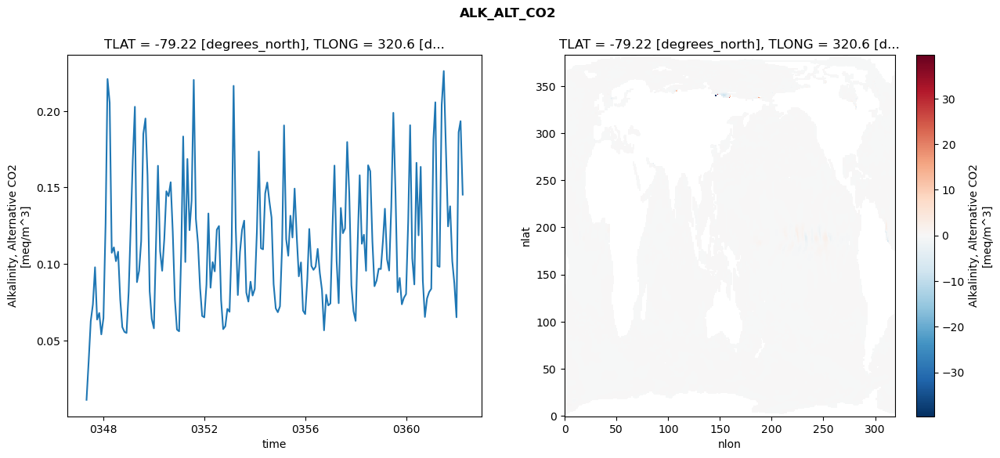
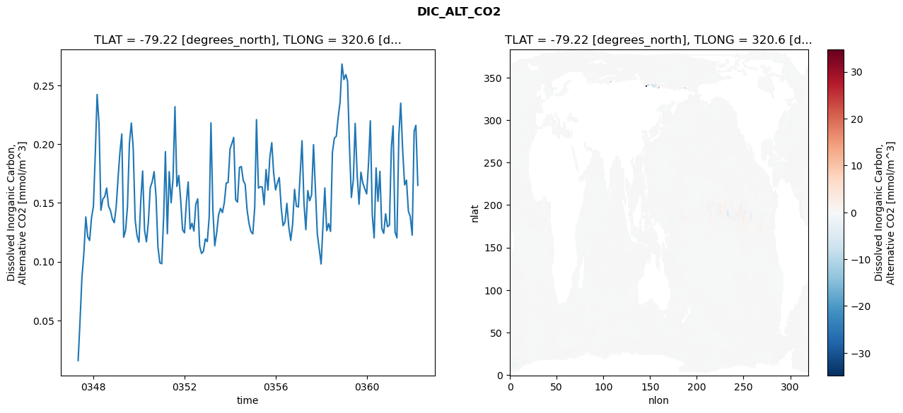
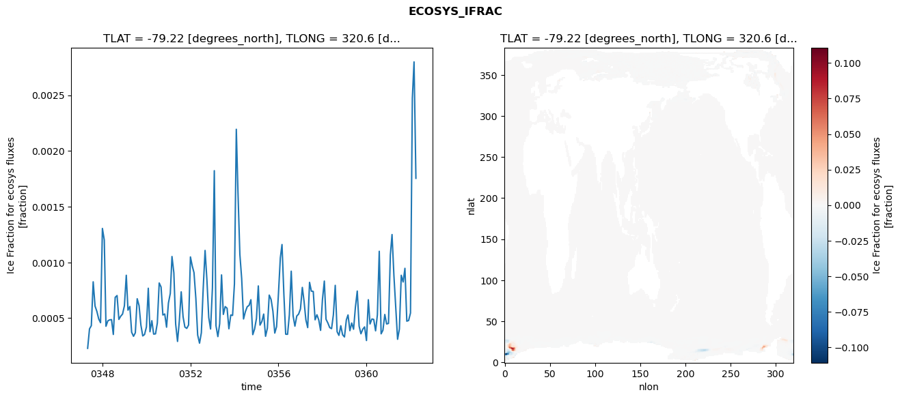
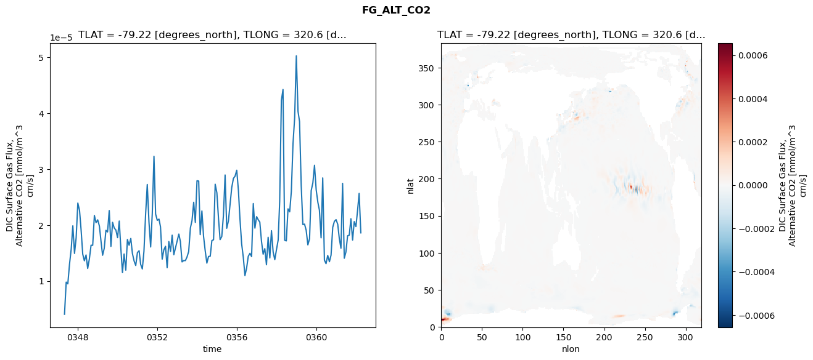

glb-dor_North_Atlantic_basin_020_1999-04-01_00081#
Simulation details#
Case: smyle.cdr-atlas-v0.glb-dor_North_Atlantic_basin_020_1999-04-01_00081.001
Basin: North_Atlantic_basin
Polygon: 20.0
Start date: 1999-04
Show code cell source Hide code cell source
import xarray as xr
import matplotlib.pyplot as plt
Show code cell source Hide code cell source
zarr_store = "/path/to/zarr/store"
# Parameters
zarr_store = "/global/cfs/projectdirs/m4746/Projects/Ocean-CDR-Atlas-v0/data/validation/smyle.cdr-atlas-v0.glb-dor_North_Atlantic_basin_020_1999-04-01_00081.001.validation.zarr"
Show code cell source Hide code cell source
%%time
ds_o = xr.open_zarr(zarr_store).compute()
ds_o
CPU times: user 618 ms, sys: 526 ms, total: 1.14 s
Wall time: 1.46 s
<xarray.Dataset> Size: 2MB
Dimensions: (nlat: 384, nlon: 320, time: 180)
Coordinates:
TLAT float64 8B -79.22
TLONG float64 8B 320.6
ULAT float64 8B -78.95
ULONG float64 8B 321.1
* time (time) object 1kB 0347-05-01 00:00:00 ... 0362-04-01 0...
z_t float32 4B 500.0
Dimensions without coordinates: nlat, nlon
Data variables:
ALK_ALT_CO2_diff (nlat, nlon) float32 492kB nan nan nan ... nan nan nan
ALK_ALT_CO2_rmse (time) float64 1kB 0.01108 0.0364 ... 0.1934 0.1453
DIC_ALT_CO2_diff (nlat, nlon) float32 492kB nan nan nan ... nan nan nan
DIC_ALT_CO2_rmse (time) float64 1kB 0.01591 0.0505 0.08666 ... 0.216 0.165
ECOSYS_IFRAC_diff (nlat, nlon) float32 492kB nan nan nan ... nan nan nan
ECOSYS_IFRAC_rmse (time) float64 1kB 0.0002292 0.0004038 ... 0.001755
FG_ALT_CO2_diff (nlat, nlon) float32 492kB nan nan nan ... nan nan nan
FG_ALT_CO2_rmse (time) float64 1kB 4.057e-06 9.808e-06 ... 1.862e-05xarray.Dataset
- nlat: 384
- nlon: 320
- time: 180
- TLAT()float64-79.22
- long_name :
- array of t-grid latitudes
- units :
- degrees_north
array(-79.22052261)
- TLONG()float64320.6
- long_name :
- array of t-grid longitudes
- units :
- degrees_east
array(320.56250892)
- ULAT()float64-78.95
- long_name :
- array of u-grid latitudes
- units :
- degrees_north
array(-78.95289509)
- ULONG()float64321.1
- long_name :
- array of u-grid longitudes
- units :
- degrees_east
array(321.12500894)
- time(time)object0347-05-01 00:00:00 ... 0362-04-...
- bounds :
- time_bound
- long_name :
- time
array([cftime.DatetimeNoLeap(347, 5, 1, 0, 0, 0, 0, has_year_zero=True), cftime.DatetimeNoLeap(347, 6, 1, 0, 0, 0, 0, has_year_zero=True), cftime.DatetimeNoLeap(347, 7, 1, 0, 0, 0, 0, has_year_zero=True), cftime.DatetimeNoLeap(347, 8, 1, 0, 0, 0, 0, has_year_zero=True), cftime.DatetimeNoLeap(347, 9, 1, 0, 0, 0, 0, has_year_zero=True), cftime.DatetimeNoLeap(347, 10, 1, 0, 0, 0, 0, has_year_zero=True), cftime.DatetimeNoLeap(347, 11, 1, 0, 0, 0, 0, has_year_zero=True), cftime.DatetimeNoLeap(347, 12, 1, 0, 0, 0, 0, has_year_zero=True), cftime.DatetimeNoLeap(348, 1, 1, 0, 0, 0, 0, has_year_zero=True), cftime.DatetimeNoLeap(348, 2, 1, 0, 0, 0, 0, has_year_zero=True), cftime.DatetimeNoLeap(348, 3, 1, 0, 0, 0, 0, has_year_zero=True), cftime.DatetimeNoLeap(348, 4, 1, 0, 0, 0, 0, has_year_zero=True), cftime.DatetimeNoLeap(348, 5, 1, 0, 0, 0, 0, has_year_zero=True), cftime.DatetimeNoLeap(348, 6, 1, 0, 0, 0, 0, has_year_zero=True), cftime.DatetimeNoLeap(348, 7, 1, 0, 0, 0, 0, has_year_zero=True), cftime.DatetimeNoLeap(348, 8, 1, 0, 0, 0, 0, has_year_zero=True), cftime.DatetimeNoLeap(348, 9, 1, 0, 0, 0, 0, has_year_zero=True), cftime.DatetimeNoLeap(348, 10, 1, 0, 0, 0, 0, has_year_zero=True), cftime.DatetimeNoLeap(348, 11, 1, 0, 0, 0, 0, has_year_zero=True), cftime.DatetimeNoLeap(348, 12, 1, 0, 0, 0, 0, has_year_zero=True), cftime.DatetimeNoLeap(349, 1, 1, 0, 0, 0, 0, has_year_zero=True), cftime.DatetimeNoLeap(349, 2, 1, 0, 0, 0, 0, has_year_zero=True), cftime.DatetimeNoLeap(349, 3, 1, 0, 0, 0, 0, has_year_zero=True), cftime.DatetimeNoLeap(349, 4, 1, 0, 0, 0, 0, has_year_zero=True), cftime.DatetimeNoLeap(349, 5, 1, 0, 0, 0, 0, has_year_zero=True), cftime.DatetimeNoLeap(349, 6, 1, 0, 0, 0, 0, has_year_zero=True), cftime.DatetimeNoLeap(349, 7, 1, 0, 0, 0, 0, has_year_zero=True), cftime.DatetimeNoLeap(349, 8, 1, 0, 0, 0, 0, has_year_zero=True), cftime.DatetimeNoLeap(349, 9, 1, 0, 0, 0, 0, has_year_zero=True), cftime.DatetimeNoLeap(349, 10, 1, 0, 0, 0, 0, has_year_zero=True), cftime.DatetimeNoLeap(349, 11, 1, 0, 0, 0, 0, has_year_zero=True), cftime.DatetimeNoLeap(349, 12, 1, 0, 0, 0, 0, has_year_zero=True), cftime.DatetimeNoLeap(350, 1, 1, 0, 0, 0, 0, has_year_zero=True), cftime.DatetimeNoLeap(350, 2, 1, 0, 0, 0, 0, has_year_zero=True), cftime.DatetimeNoLeap(350, 3, 1, 0, 0, 0, 0, has_year_zero=True), cftime.DatetimeNoLeap(350, 4, 1, 0, 0, 0, 0, has_year_zero=True), cftime.DatetimeNoLeap(350, 5, 1, 0, 0, 0, 0, has_year_zero=True), cftime.DatetimeNoLeap(350, 6, 1, 0, 0, 0, 0, has_year_zero=True), cftime.DatetimeNoLeap(350, 7, 1, 0, 0, 0, 0, has_year_zero=True), cftime.DatetimeNoLeap(350, 8, 1, 0, 0, 0, 0, has_year_zero=True), cftime.DatetimeNoLeap(350, 9, 1, 0, 0, 0, 0, has_year_zero=True), cftime.DatetimeNoLeap(350, 10, 1, 0, 0, 0, 0, has_year_zero=True), cftime.DatetimeNoLeap(350, 11, 1, 0, 0, 0, 0, has_year_zero=True), cftime.DatetimeNoLeap(350, 12, 1, 0, 0, 0, 0, has_year_zero=True), cftime.DatetimeNoLeap(351, 1, 1, 0, 0, 0, 0, has_year_zero=True), cftime.DatetimeNoLeap(351, 2, 1, 0, 0, 0, 0, has_year_zero=True), cftime.DatetimeNoLeap(351, 3, 1, 0, 0, 0, 0, has_year_zero=True), cftime.DatetimeNoLeap(351, 4, 1, 0, 0, 0, 0, has_year_zero=True), cftime.DatetimeNoLeap(351, 5, 1, 0, 0, 0, 0, has_year_zero=True), cftime.DatetimeNoLeap(351, 6, 1, 0, 0, 0, 0, has_year_zero=True), cftime.DatetimeNoLeap(351, 7, 1, 0, 0, 0, 0, has_year_zero=True), cftime.DatetimeNoLeap(351, 8, 1, 0, 0, 0, 0, has_year_zero=True), cftime.DatetimeNoLeap(351, 9, 1, 0, 0, 0, 0, has_year_zero=True), cftime.DatetimeNoLeap(351, 10, 1, 0, 0, 0, 0, has_year_zero=True), cftime.DatetimeNoLeap(351, 11, 1, 0, 0, 0, 0, has_year_zero=True), cftime.DatetimeNoLeap(351, 12, 1, 0, 0, 0, 0, has_year_zero=True), cftime.DatetimeNoLeap(352, 1, 1, 0, 0, 0, 0, has_year_zero=True), cftime.DatetimeNoLeap(352, 2, 1, 0, 0, 0, 0, has_year_zero=True), cftime.DatetimeNoLeap(352, 3, 1, 0, 0, 0, 0, has_year_zero=True), cftime.DatetimeNoLeap(352, 4, 1, 0, 0, 0, 0, has_year_zero=True), cftime.DatetimeNoLeap(352, 5, 1, 0, 0, 0, 0, has_year_zero=True), cftime.DatetimeNoLeap(352, 6, 1, 0, 0, 0, 0, has_year_zero=True), cftime.DatetimeNoLeap(352, 7, 1, 0, 0, 0, 0, has_year_zero=True), cftime.DatetimeNoLeap(352, 8, 1, 0, 0, 0, 0, has_year_zero=True), cftime.DatetimeNoLeap(352, 9, 1, 0, 0, 0, 0, has_year_zero=True), cftime.DatetimeNoLeap(352, 10, 1, 0, 0, 0, 0, has_year_zero=True), cftime.DatetimeNoLeap(352, 11, 1, 0, 0, 0, 0, has_year_zero=True), cftime.DatetimeNoLeap(352, 12, 1, 0, 0, 0, 0, has_year_zero=True), cftime.DatetimeNoLeap(353, 1, 1, 0, 0, 0, 0, has_year_zero=True), cftime.DatetimeNoLeap(353, 2, 1, 0, 0, 0, 0, has_year_zero=True), cftime.DatetimeNoLeap(353, 3, 1, 0, 0, 0, 0, has_year_zero=True), cftime.DatetimeNoLeap(353, 4, 1, 0, 0, 0, 0, has_year_zero=True), cftime.DatetimeNoLeap(353, 5, 1, 0, 0, 0, 0, has_year_zero=True), cftime.DatetimeNoLeap(353, 6, 1, 0, 0, 0, 0, has_year_zero=True), cftime.DatetimeNoLeap(353, 7, 1, 0, 0, 0, 0, has_year_zero=True), cftime.DatetimeNoLeap(353, 8, 1, 0, 0, 0, 0, has_year_zero=True), cftime.DatetimeNoLeap(353, 9, 1, 0, 0, 0, 0, has_year_zero=True), cftime.DatetimeNoLeap(353, 10, 1, 0, 0, 0, 0, has_year_zero=True), cftime.DatetimeNoLeap(353, 11, 1, 0, 0, 0, 0, has_year_zero=True), cftime.DatetimeNoLeap(353, 12, 1, 0, 0, 0, 0, has_year_zero=True), cftime.DatetimeNoLeap(354, 1, 1, 0, 0, 0, 0, has_year_zero=True), cftime.DatetimeNoLeap(354, 2, 1, 0, 0, 0, 0, has_year_zero=True), cftime.DatetimeNoLeap(354, 3, 1, 0, 0, 0, 0, has_year_zero=True), cftime.DatetimeNoLeap(354, 4, 1, 0, 0, 0, 0, has_year_zero=True), cftime.DatetimeNoLeap(354, 5, 1, 0, 0, 0, 0, has_year_zero=True), cftime.DatetimeNoLeap(354, 6, 1, 0, 0, 0, 0, has_year_zero=True), cftime.DatetimeNoLeap(354, 7, 1, 0, 0, 0, 0, has_year_zero=True), cftime.DatetimeNoLeap(354, 8, 1, 0, 0, 0, 0, has_year_zero=True), cftime.DatetimeNoLeap(354, 9, 1, 0, 0, 0, 0, has_year_zero=True), cftime.DatetimeNoLeap(354, 10, 1, 0, 0, 0, 0, has_year_zero=True), cftime.DatetimeNoLeap(354, 11, 1, 0, 0, 0, 0, has_year_zero=True), cftime.DatetimeNoLeap(354, 12, 1, 0, 0, 0, 0, has_year_zero=True), cftime.DatetimeNoLeap(355, 1, 1, 0, 0, 0, 0, has_year_zero=True), cftime.DatetimeNoLeap(355, 2, 1, 0, 0, 0, 0, has_year_zero=True), cftime.DatetimeNoLeap(355, 3, 1, 0, 0, 0, 0, has_year_zero=True), cftime.DatetimeNoLeap(355, 4, 1, 0, 0, 0, 0, has_year_zero=True), cftime.DatetimeNoLeap(355, 5, 1, 0, 0, 0, 0, has_year_zero=True), cftime.DatetimeNoLeap(355, 6, 1, 0, 0, 0, 0, has_year_zero=True), cftime.DatetimeNoLeap(355, 7, 1, 0, 0, 0, 0, has_year_zero=True), cftime.DatetimeNoLeap(355, 8, 1, 0, 0, 0, 0, has_year_zero=True), cftime.DatetimeNoLeap(355, 9, 1, 0, 0, 0, 0, has_year_zero=True), cftime.DatetimeNoLeap(355, 10, 1, 0, 0, 0, 0, has_year_zero=True), cftime.DatetimeNoLeap(355, 11, 1, 0, 0, 0, 0, has_year_zero=True), cftime.DatetimeNoLeap(355, 12, 1, 0, 0, 0, 0, has_year_zero=True), cftime.DatetimeNoLeap(356, 1, 1, 0, 0, 0, 0, has_year_zero=True), cftime.DatetimeNoLeap(356, 2, 1, 0, 0, 0, 0, has_year_zero=True), cftime.DatetimeNoLeap(356, 3, 1, 0, 0, 0, 0, has_year_zero=True), cftime.DatetimeNoLeap(356, 4, 1, 0, 0, 0, 0, has_year_zero=True), cftime.DatetimeNoLeap(356, 5, 1, 0, 0, 0, 0, has_year_zero=True), cftime.DatetimeNoLeap(356, 6, 1, 0, 0, 0, 0, has_year_zero=True), cftime.DatetimeNoLeap(356, 7, 1, 0, 0, 0, 0, has_year_zero=True), cftime.DatetimeNoLeap(356, 8, 1, 0, 0, 0, 0, has_year_zero=True), cftime.DatetimeNoLeap(356, 9, 1, 0, 0, 0, 0, has_year_zero=True), cftime.DatetimeNoLeap(356, 10, 1, 0, 0, 0, 0, has_year_zero=True), cftime.DatetimeNoLeap(356, 11, 1, 0, 0, 0, 0, has_year_zero=True), cftime.DatetimeNoLeap(356, 12, 1, 0, 0, 0, 0, has_year_zero=True), cftime.DatetimeNoLeap(357, 1, 1, 0, 0, 0, 0, has_year_zero=True), cftime.DatetimeNoLeap(357, 2, 1, 0, 0, 0, 0, has_year_zero=True), cftime.DatetimeNoLeap(357, 3, 1, 0, 0, 0, 0, has_year_zero=True), cftime.DatetimeNoLeap(357, 4, 1, 0, 0, 0, 0, has_year_zero=True), cftime.DatetimeNoLeap(357, 5, 1, 0, 0, 0, 0, has_year_zero=True), cftime.DatetimeNoLeap(357, 6, 1, 0, 0, 0, 0, has_year_zero=True), cftime.DatetimeNoLeap(357, 7, 1, 0, 0, 0, 0, has_year_zero=True), cftime.DatetimeNoLeap(357, 8, 1, 0, 0, 0, 0, has_year_zero=True), cftime.DatetimeNoLeap(357, 9, 1, 0, 0, 0, 0, has_year_zero=True), cftime.DatetimeNoLeap(357, 10, 1, 0, 0, 0, 0, has_year_zero=True), cftime.DatetimeNoLeap(357, 11, 1, 0, 0, 0, 0, has_year_zero=True), cftime.DatetimeNoLeap(357, 12, 1, 0, 0, 0, 0, has_year_zero=True), cftime.DatetimeNoLeap(358, 1, 1, 0, 0, 0, 0, has_year_zero=True), cftime.DatetimeNoLeap(358, 2, 1, 0, 0, 0, 0, has_year_zero=True), cftime.DatetimeNoLeap(358, 3, 1, 0, 0, 0, 0, has_year_zero=True), cftime.DatetimeNoLeap(358, 4, 1, 0, 0, 0, 0, has_year_zero=True), cftime.DatetimeNoLeap(358, 5, 1, 0, 0, 0, 0, has_year_zero=True), cftime.DatetimeNoLeap(358, 6, 1, 0, 0, 0, 0, has_year_zero=True), cftime.DatetimeNoLeap(358, 7, 1, 0, 0, 0, 0, has_year_zero=True), cftime.DatetimeNoLeap(358, 8, 1, 0, 0, 0, 0, has_year_zero=True), cftime.DatetimeNoLeap(358, 9, 1, 0, 0, 0, 0, has_year_zero=True), cftime.DatetimeNoLeap(358, 10, 1, 0, 0, 0, 0, has_year_zero=True), cftime.DatetimeNoLeap(358, 11, 1, 0, 0, 0, 0, has_year_zero=True), cftime.DatetimeNoLeap(358, 12, 1, 0, 0, 0, 0, has_year_zero=True), cftime.DatetimeNoLeap(359, 1, 1, 0, 0, 0, 0, has_year_zero=True), cftime.DatetimeNoLeap(359, 2, 1, 0, 0, 0, 0, has_year_zero=True), cftime.DatetimeNoLeap(359, 3, 1, 0, 0, 0, 0, has_year_zero=True), cftime.DatetimeNoLeap(359, 4, 1, 0, 0, 0, 0, has_year_zero=True), cftime.DatetimeNoLeap(359, 5, 1, 0, 0, 0, 0, has_year_zero=True), cftime.DatetimeNoLeap(359, 6, 1, 0, 0, 0, 0, has_year_zero=True), cftime.DatetimeNoLeap(359, 7, 1, 0, 0, 0, 0, has_year_zero=True), cftime.DatetimeNoLeap(359, 8, 1, 0, 0, 0, 0, has_year_zero=True), cftime.DatetimeNoLeap(359, 9, 1, 0, 0, 0, 0, has_year_zero=True), cftime.DatetimeNoLeap(359, 10, 1, 0, 0, 0, 0, has_year_zero=True), cftime.DatetimeNoLeap(359, 11, 1, 0, 0, 0, 0, has_year_zero=True), cftime.DatetimeNoLeap(359, 12, 1, 0, 0, 0, 0, has_year_zero=True), cftime.DatetimeNoLeap(360, 1, 1, 0, 0, 0, 0, has_year_zero=True), cftime.DatetimeNoLeap(360, 2, 1, 0, 0, 0, 0, has_year_zero=True), cftime.DatetimeNoLeap(360, 3, 1, 0, 0, 0, 0, has_year_zero=True), cftime.DatetimeNoLeap(360, 4, 1, 0, 0, 0, 0, has_year_zero=True), cftime.DatetimeNoLeap(360, 5, 1, 0, 0, 0, 0, has_year_zero=True), cftime.DatetimeNoLeap(360, 6, 1, 0, 0, 0, 0, has_year_zero=True), cftime.DatetimeNoLeap(360, 7, 1, 0, 0, 0, 0, has_year_zero=True), cftime.DatetimeNoLeap(360, 8, 1, 0, 0, 0, 0, has_year_zero=True), cftime.DatetimeNoLeap(360, 9, 1, 0, 0, 0, 0, has_year_zero=True), cftime.DatetimeNoLeap(360, 10, 1, 0, 0, 0, 0, has_year_zero=True), cftime.DatetimeNoLeap(360, 11, 1, 0, 0, 0, 0, has_year_zero=True), cftime.DatetimeNoLeap(360, 12, 1, 0, 0, 0, 0, has_year_zero=True), cftime.DatetimeNoLeap(361, 1, 1, 0, 0, 0, 0, has_year_zero=True), cftime.DatetimeNoLeap(361, 2, 1, 0, 0, 0, 0, has_year_zero=True), cftime.DatetimeNoLeap(361, 3, 1, 0, 0, 0, 0, has_year_zero=True), cftime.DatetimeNoLeap(361, 4, 1, 0, 0, 0, 0, has_year_zero=True), cftime.DatetimeNoLeap(361, 5, 1, 0, 0, 0, 0, has_year_zero=True), cftime.DatetimeNoLeap(361, 6, 1, 0, 0, 0, 0, has_year_zero=True), cftime.DatetimeNoLeap(361, 7, 1, 0, 0, 0, 0, has_year_zero=True), cftime.DatetimeNoLeap(361, 8, 1, 0, 0, 0, 0, has_year_zero=True), cftime.DatetimeNoLeap(361, 9, 1, 0, 0, 0, 0, has_year_zero=True), cftime.DatetimeNoLeap(361, 10, 1, 0, 0, 0, 0, has_year_zero=True), cftime.DatetimeNoLeap(361, 11, 1, 0, 0, 0, 0, has_year_zero=True), cftime.DatetimeNoLeap(361, 12, 1, 0, 0, 0, 0, has_year_zero=True), cftime.DatetimeNoLeap(362, 1, 1, 0, 0, 0, 0, has_year_zero=True), cftime.DatetimeNoLeap(362, 2, 1, 0, 0, 0, 0, has_year_zero=True), cftime.DatetimeNoLeap(362, 3, 1, 0, 0, 0, 0, has_year_zero=True), cftime.DatetimeNoLeap(362, 4, 1, 0, 0, 0, 0, has_year_zero=True)], dtype=object) - z_t()float32500.0
- long_name :
- depth from surface to midpoint of layer
- positive :
- down
- units :
- centimeters
- valid_max :
- 537500.0
- valid_min :
- 500.0
array(500., dtype=float32)
- ALK_ALT_CO2_diff(nlat, nlon)float32nan nan nan nan ... nan nan nan nan
- cell_methods :
- time: mean
- grid_loc :
- 3111
- long_name :
- Alkalinity, Alternative CO2
- units :
- meq/m^3
array([[ nan, nan, nan, ..., nan, nan, nan], [ nan, nan, nan, ..., nan, nan, nan], [0.01635742, 0.02148438, 0.03564453, ..., nan, nan, nan], ..., [ nan, nan, nan, ..., nan, nan, nan], [ nan, nan, nan, ..., nan, nan, nan], [ nan, nan, nan, ..., nan, nan, nan]], dtype=float32) - ALK_ALT_CO2_rmse(time)float640.01108 0.0364 ... 0.1934 0.1453
- cell_methods :
- time: mean
- grid_loc :
- 3111
- long_name :
- Alkalinity, Alternative CO2
- units :
- meq/m^3
array([0.0110795 , 0.03639808, 0.0625057 , 0.07353736, 0.09780046, 0.063584 , 0.06790213, 0.05390329, 0.06456136, 0.12653239, 0.22095411, 0.2054683 , 0.10728388, 0.11084067, 0.10175905, 0.10797765, 0.07663149, 0.05866383, 0.05554431, 0.05483528, 0.081846 , 0.12771337, 0.16730744, 0.20279306, 0.08808824, 0.09550111, 0.1149096 , 0.18509702, 0.19512098, 0.15779194, 0.0820949 , 0.06399189, 0.057888 , 0.11316601, 0.16420836, 0.10832939, 0.09552125, 0.11665021, 0.14753604, 0.14432047, 0.15343506, 0.12104279, 0.07666604, 0.05706823, 0.05592778, 0.10807172, 0.18335851, 0.10124696, 0.16864347, 0.12206198, 0.14150976, 0.2203645 , 0.12946294, 0.11357191, 0.08405604, 0.06592466, 0.06505541, 0.08645894, 0.13300164, 0.08444774, 0.10116044, 0.09513514, 0.12239129, 0.12478881, 0.07633685, 0.05733509, 0.05923345, 0.07059452, 0.06869298, 0.11434833, 0.21648678, 0.12342991, 0.07962901, 0.10774838, 0.12229181, 0.12829578, 0.08121068, 0.07537567, 0.08836044, 0.0792978 , 0.0836503 , 0.12123918, 0.1735202 , 0.11023518, 0.10955898, 0.14611109, 0.15324604, 0.1409248 , 0.13035353, 0.08684726, 0.07091571, 0.06839725, 0.07226387, 0.11207429, 0.19060164, 0.11618519, 0.10535596, 0.13152299, 0.11727893, 0.14926952, 0.11771387, 0.09187467, 0.10098142, 0.06944295, 0.06717244, 0.09002482, 0.12287184, 0.09868423, 0.09610967, 0.09819102, 0.1098328 , 0.09402387, 0.08291082, 0.05655886, 0.079852 , 0.07286686, 0.074111 , 0.12487733, 0.16433825, 0.10206117, 0.07431272, 0.13660357, 0.12007477, 0.12321212, 0.17973874, 0.14615257, 0.08608397, 0.06915973, 0.06275309, 0.11543101, 0.15798414, 0.11316861, 0.11909953, 0.09549655, 0.16452184, 0.16063277, 0.11477034, 0.08540514, 0.08913047, 0.09686177, 0.0966327 , 0.11540659, 0.13609642, 0.10302524, 0.09566355, 0.13712501, 0.1988414 , 0.14713999, 0.08158458, 0.09080174, 0.07356861, 0.07784887, 0.08023425, 0.12760178, 0.19071946, 0.1035076 , 0.08657814, 0.16614984, 0.11869022, 0.16350907, 0.08890214, 0.06529799, 0.07747352, 0.08156648, 0.08371449, 0.18132379, 0.20572184, 0.09871841, 0.09806303, 0.20409336, 0.22617191, 0.17498595, 0.12454654, 0.1377018 , 0.10182785, 0.08738395, 0.06509623, 0.18610643, 0.19338854, 0.14531012]) - DIC_ALT_CO2_diff(nlat, nlon)float32nan nan nan nan ... nan nan nan nan
- cell_methods :
- time: mean
- grid_loc :
- 3111
- long_name :
- Dissolved Inorganic Carbon, Alternative CO2
- units :
- mmol/m^3
array([[ nan, nan, nan, ..., nan, nan, nan], [ nan, nan, nan, ..., nan, nan, nan], [-0.03027344, -0.01391602, 0.00683594, ..., nan, nan, nan], ..., [ nan, nan, nan, ..., nan, nan, nan], [ nan, nan, nan, ..., nan, nan, nan], [ nan, nan, nan, ..., nan, nan, nan]], dtype=float32) - DIC_ALT_CO2_rmse(time)float640.01591 0.0505 ... 0.216 0.165
- cell_methods :
- time: mean
- grid_loc :
- 3111
- long_name :
- Dissolved Inorganic Carbon, Alternative CO2
- units :
- mmol/m^3
array([0.01590505, 0.05049718, 0.08666426, 0.10721853, 0.13805988, 0.12129858, 0.11802852, 0.13709411, 0.14713493, 0.19350421, 0.24224056, 0.21726768, 0.14375501, 0.15327884, 0.15520453, 0.16261455, 0.14710554, 0.14359564, 0.13627192, 0.13314838, 0.14660726, 0.17183858, 0.19247669, 0.20859519, 0.12079477, 0.12671778, 0.1468607 , 0.20075559, 0.21794211, 0.19646367, 0.13545808, 0.12216964, 0.1166275 , 0.15392083, 0.17716353, 0.12670303, 0.11690718, 0.13382897, 0.16295183, 0.16800657, 0.17658819, 0.15605829, 0.11282434, 0.09917037, 0.09824738, 0.1385229 , 0.19361489, 0.12383486, 0.17658741, 0.15013679, 0.17072205, 0.23185172, 0.16403303, 0.17333308, 0.15220865, 0.12713386, 0.12454658, 0.1512208 , 0.16784421, 0.12779474, 0.13271809, 0.12606826, 0.14886101, 0.15349334, 0.11326973, 0.1070121 , 0.10892785, 0.11932867, 0.11714378, 0.13785256, 0.21809845, 0.14371 , 0.11354806, 0.12465873, 0.1397575 , 0.14533723, 0.14177111, 0.15002632, 0.16691432, 0.16735392, 0.19586931, 0.20084789, 0.20563281, 0.15266617, 0.15069196, 0.1801219 , 0.1809624 , 0.16908968, 0.16561855, 0.14415623, 0.1325287 , 0.1256286 , 0.12363844, 0.14645179, 0.22086785, 0.16264899, 0.16375804, 0.16352724, 0.14847828, 0.1784131 , 0.16094695, 0.18898847, 0.2012134 , 0.1754068 , 0.16105149, 0.16734248, 0.17160149, 0.14616742, 0.13063316, 0.13372543, 0.14959321, 0.12952057, 0.11819613, 0.13185729, 0.16153043, 0.14714706, 0.14652466, 0.17601842, 0.20287927, 0.15003565, 0.12723047, 0.16044887, 0.15185928, 0.15679595, 0.19954359, 0.16209565, 0.12350183, 0.11097262, 0.09806477, 0.13258769, 0.16269464, 0.12639271, 0.13236071, 0.125766 , 0.19287716, 0.20506296, 0.20660741, 0.22258379, 0.23581662, 0.26810237, 0.25492568, 0.25914125, 0.2534128 , 0.19716561, 0.15465776, 0.16945756, 0.2176574 , 0.17445787, 0.14885945, 0.17605199, 0.16680252, 0.16215981, 0.1576625 , 0.18439684, 0.21980957, 0.13973689, 0.12023369, 0.17975637, 0.15134498, 0.17680154, 0.12812527, 0.12414464, 0.14074839, 0.12975456, 0.13114707, 0.19757683, 0.21552675, 0.12525457, 0.12031901, 0.20734929, 0.23483713, 0.195098 , 0.16530845, 0.16936283, 0.14293478, 0.13838902, 0.12259154, 0.21089149, 0.21595216, 0.16497815]) - ECOSYS_IFRAC_diff(nlat, nlon)float32nan nan nan nan ... nan nan nan nan
- cell_methods :
- time: mean
- grid_loc :
- 2110
- long_name :
- Ice Fraction for ecosys fluxes
- units :
- fraction
array([[ nan, nan, nan, ..., nan, nan, nan], [ nan, nan, nan, ..., nan, nan, nan], [-0.00109959, -0.00340849, -0.00384969, ..., nan, nan, nan], ..., [ nan, nan, nan, ..., nan, nan, nan], [ nan, nan, nan, ..., nan, nan, nan], [ nan, nan, nan, ..., nan, nan, nan]], dtype=float32) - ECOSYS_IFRAC_rmse(time)float640.0002292 0.0004038 ... 0.001755
- cell_methods :
- time: mean
- grid_loc :
- 2110
- long_name :
- Ice Fraction for ecosys fluxes
- units :
- fraction
array([0.00022916, 0.0004038 , 0.00043248, 0.0008258 , 0.00060807, 0.00056082, 0.00049206, 0.00045912, 0.00130467, 0.0012006 , 0.00042694, 0.00047578, 0.00048451, 0.00048675, 0.00035373, 0.00068678, 0.00070271, 0.00048865, 0.00051775, 0.0005367 , 0.00061157, 0.00088461, 0.00057161, 0.00060481, 0.00037339, 0.00033736, 0.00036858, 0.00067401, 0.00061235, 0.00043872, 0.0003406 , 0.0003534 , 0.00042061, 0.00076823, 0.00037811, 0.00047722, 0.00035664, 0.00035921, 0.00045643, 0.00081549, 0.00077912, 0.0005283 , 0.00053722, 0.00041909, 0.00063576, 0.00072205, 0.00105292, 0.0009067 , 0.00044767, 0.00029119, 0.00047544, 0.00073608, 0.00051222, 0.00041991, 0.00040796, 0.00043806, 0.00104902, 0.00096604, 0.00090844, 0.0006771 , 0.00034865, 0.00027548, 0.00036867, 0.00076769, 0.00110731, 0.00084672, 0.00050548, 0.0004026 , 0.00077211, 0.00182266, 0.00043231, 0.00033455, 0.00044937, 0.00088795, 0.00053368, 0.00060371, 0.00058881, 0.00040474, 0.00052824, 0.0005244 , 0.00080799, 0.0021942 , 0.00161897, 0.00107164, 0.00085497, 0.0004928 , 0.0005574 , 0.00060243, 0.00061474, 0.0006654 , 0.00035205, 0.00040201, 0.00049659, 0.00078903, 0.00043756, 0.00047022, 0.00053645, 0.00033729, 0.00040894, 0.00070685, 0.00066737, 0.00056258, 0.00036594, 0.00042375, 0.00071924, 0.00103991, 0.00116035, 0.00071366, 0.00035605, 0.00035496, 0.00053071, 0.00092128, 0.00052097, 0.00042804, 0.00051928, 0.00053607, 0.00058234, 0.00077577, 0.00065424, 0.00048412, 0.00041517, 0.00082094, 0.00074226, 0.00073948, 0.00048496, 0.0005305 , 0.00048316, 0.00039046, 0.00066837, 0.00083259, 0.00049001, 0.00045622, 0.00041526, 0.00040582, 0.00052976, 0.00079418, 0.00037824, 0.00034549, 0.00043196, 0.00035097, 0.00033137, 0.00048411, 0.00052874, 0.0003874 , 0.00045659, 0.00040059, 0.00059547, 0.00074283, 0.00042803, 0.00035966, 0.00040102, 0.00042151, 0.00029921, 0.00066518, 0.00044765, 0.00049236, 0.00048881, 0.00038637, 0.00052926, 0.00109983, 0.00035936, 0.0003918 , 0.00053283, 0.00044779, 0.00045268, 0.00106669, 0.00124994, 0.00088298, 0.00059823, 0.0003106 , 0.00040252, 0.00088442, 0.00082422, 0.00094699, 0.00047282, 0.00047891, 0.00054616, 0.00247293, 0.00279881, 0.00175451]) - FG_ALT_CO2_diff(nlat, nlon)float32nan nan nan nan ... nan nan nan nan
- cell_methods :
- time: mean
- grid_loc :
- 2110
- long_name :
- DIC Surface Gas Flux, Alternative CO2
- units :
- mmol/m^3 cm/s
array([[ nan, nan, nan, ..., nan, nan, nan], [ nan, nan, nan, ..., nan, nan, nan], [7.5927092e-06, 1.4066085e-05, 1.8167222e-05, ..., nan, nan, nan], ..., [ nan, nan, nan, ..., nan, nan, nan], [ nan, nan, nan, ..., nan, nan, nan], [ nan, nan, nan, ..., nan, nan, nan]], dtype=float32) - FG_ALT_CO2_rmse(time)float644.057e-06 9.808e-06 ... 1.862e-05
- cell_methods :
- time: mean
- grid_loc :
- 2110
- long_name :
- DIC Surface Gas Flux, Alternative CO2
- units :
- mmol/m^3 cm/s
array([4.05689257e-06, 9.80801892e-06, 9.49706282e-06, 1.30048759e-05, 1.57030040e-05, 1.98710812e-05, 1.49329964e-05, 1.77311333e-05, 2.39395049e-05, 2.26486885e-05, 1.92644804e-05, 1.48147370e-05, 1.36192375e-05, 1.46656293e-05, 1.22530552e-05, 1.39572824e-05, 1.64057836e-05, 1.63798137e-05, 2.17256947e-05, 2.04439627e-05, 2.09425394e-05, 1.98347431e-05, 1.72665126e-05, 1.46033735e-05, 1.58482706e-05, 1.90660785e-05, 1.87754186e-05, 2.26033953e-05, 1.61942617e-05, 2.04983757e-05, 1.94696996e-05, 1.91346928e-05, 1.77578122e-05, 2.07249195e-05, 1.60237172e-05, 1.15120510e-05, 1.48348275e-05, 1.19506179e-05, 1.74311678e-05, 1.64035068e-05, 1.76156488e-05, 1.49220363e-05, 1.35852958e-05, 1.27767825e-05, 1.50856431e-05, 1.54175995e-05, 1.30086393e-05, 1.21631591e-05, 1.53300206e-05, 2.20348463e-05, 2.72632245e-05, 2.05834630e-05, 1.60905635e-05, 2.21241403e-05, 3.23074377e-05, 2.19818685e-05, 2.08498578e-05, 2.10740277e-05, 1.96950062e-05, 1.39140903e-05, 1.55672259e-05, 1.62133264e-05, 1.23778270e-05, 1.70615670e-05, 1.52952691e-05, 1.81962252e-05, 1.47118174e-05, 1.59272435e-05, 1.71378295e-05, 1.84002071e-05, 1.70821195e-05, 1.34251301e-05, 1.36631049e-05, 1.36552828e-05, 1.42929113e-05, 1.52820044e-05, 1.94849058e-05, 2.08079007e-05, 2.40818277e-05, 2.04846081e-05, ... 2.37557089e-05, 2.67175583e-05, 2.83532478e-05, 2.87429509e-05, 2.98104181e-05, 2.61702320e-05, 2.11499012e-05, 1.66644543e-05, 1.42929076e-05, 1.09800134e-05, 1.22948654e-05, 1.44279514e-05, 1.49606403e-05, 1.43736759e-05, 2.38518960e-05, 1.94594839e-05, 2.15116422e-05, 2.09396803e-05, 2.05323025e-05, 1.70931130e-05, 1.47974055e-05, 1.57939557e-05, 1.29071492e-05, 1.78264910e-05, 1.41280867e-05, 1.90030915e-05, 1.51883940e-05, 1.38165289e-05, 1.56098812e-05, 1.73209456e-05, 2.42324485e-05, 4.22786659e-05, 4.42400509e-05, 1.72874318e-05, 1.71786641e-05, 2.29077345e-05, 2.23719398e-05, 2.60058862e-05, 3.45667984e-05, 3.91624952e-05, 5.02612652e-05, 4.03325022e-05, 3.85127792e-05, 2.70174839e-05, 2.00945379e-05, 2.01750496e-05, 1.90762159e-05, 1.64638291e-05, 1.75533505e-05, 2.61552206e-05, 2.75646782e-05, 3.06935354e-05, 2.62919837e-05, 2.40577005e-05, 2.26844120e-05, 1.77221087e-05, 2.84366936e-05, 1.37379291e-05, 1.31089174e-05, 1.45794721e-05, 1.34502845e-05, 1.46322514e-05, 1.96107777e-05, 2.06642627e-05, 2.09754863e-05, 2.01452772e-05, 1.76529366e-05, 1.58617709e-05, 2.74677932e-05, 1.40796833e-05, 1.51826647e-05, 1.80980505e-05, 1.82048609e-05, 2.11421282e-05, 1.73293281e-05, 2.06324216e-05, 1.97369015e-05, 2.26861449e-05, 2.56690048e-05, 1.86150774e-05])
- timePandasIndex
PandasIndex(CFTimeIndex([0347-05-01 00:00:00, 0347-06-01 00:00:00, 0347-07-01 00:00:00, 0347-08-01 00:00:00, 0347-09-01 00:00:00, 0347-10-01 00:00:00, 0347-11-01 00:00:00, 0347-12-01 00:00:00, 0348-01-01 00:00:00, 0348-02-01 00:00:00, ... 0361-07-01 00:00:00, 0361-08-01 00:00:00, 0361-09-01 00:00:00, 0361-10-01 00:00:00, 0361-11-01 00:00:00, 0361-12-01 00:00:00, 0362-01-01 00:00:00, 0362-02-01 00:00:00, 0362-03-01 00:00:00, 0362-04-01 00:00:00], dtype='object', length=180, calendar='noleap', freq='MS'))
Show code cell source Hide code cell source
variables = [v[:-5] for v in ds_o.variables if "_rmse" in v]
Show code cell source Hide code cell source
plt.rcParams.update({'figure.max_open_warning': 0})
for v in variables:
fig, axs = plt.subplots(1, 2, figsize=(15, 6))
ds_o[f"{v}_rmse"].plot(ax=axs[0])
ds_o[f"{v}_diff"].plot(ax=axs[1])
plt.suptitle(v, fontweight="bold")



